Next: 7. Gridding
Up: 6. Equations
Previous: 6.2 Transport Equations
Contents
Index
6.3 Notation and Units
In this section, we discuss other common formulations of the flow
and transport equations, and how they relate to the equations solved
by .
We can rewrite equation (6.2) as
where
Table 6.3 defines the symbols and their units.
Table 6.3:
Notation and units for reformulated flow equations.
| symbol |
quantity |
units |
| 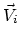 |
Darcy velocity vector |
[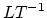] |
| 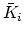 |
hydraulic conductivity tensor |
[] |
| 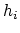 |
pressure head |
[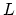] |
| 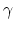 |
constant scale factor |
[
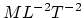] |
 |
gravity vector |
[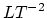] |
We can then rewrite equations (6.10) and
(6.11) as
Note that is supposed to be a tensor, but we treat it as
a scalar here.
Also, note that by carefully defining the input to , we can
use the units of equations (6.19) and
(6.20).
To be more precise, let us denote input symbols by appending
the symbols in table 6.1 with 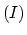, and
let
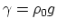 (this is a typical definition).
Then, we want:
| 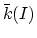 |
 |
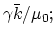 |
(6.21) |
| 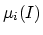 |
|
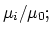 |
(6.22) |
| 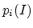 |
|
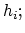 |
(6.23) |
| 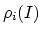 |
|
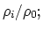 |
(6.24) |
| 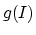 |
|
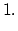 |
(6.25) |
By doing this,  represents hydraulic conductivity of the base
phase 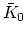 (e.g. water) under saturated conditions (i.e. 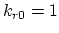).
Though input has been defined this way in the past, this is not
the recommended procedure since it may lead to confusion and mistakes.
represents hydraulic conductivity of the base
phase 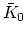 (e.g. water) under saturated conditions (i.e. 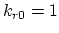).
Though input has been defined this way in the past, this is not
the recommended procedure since it may lead to confusion and mistakes.
Next: 7. Gridding
Up: 6. Equations
Previous: 6.2 Transport Equations
Contents
Index
Steve Smith
2008-06-02